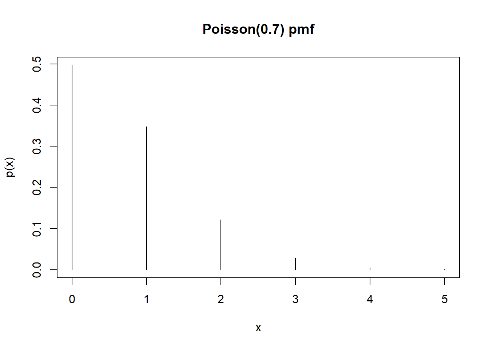
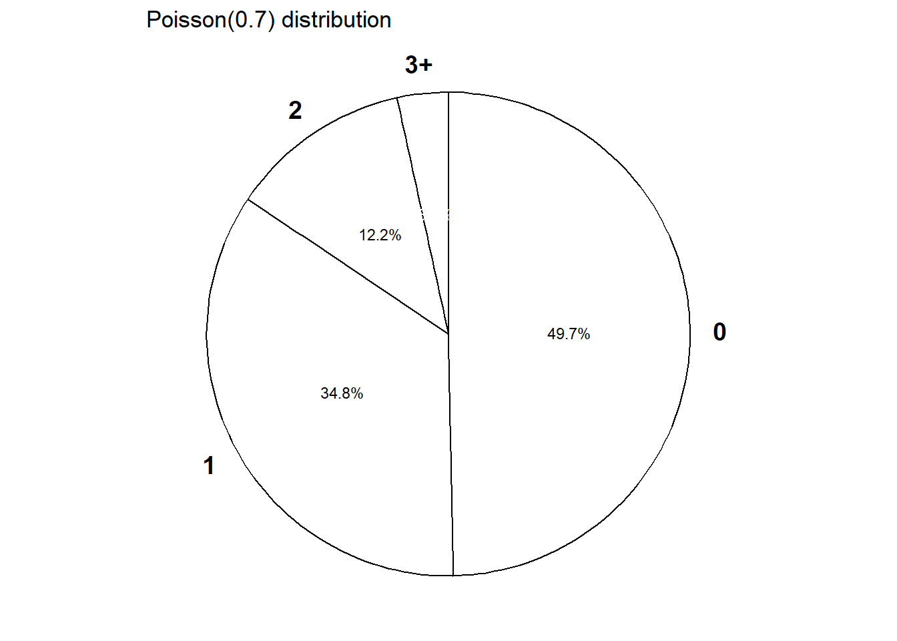
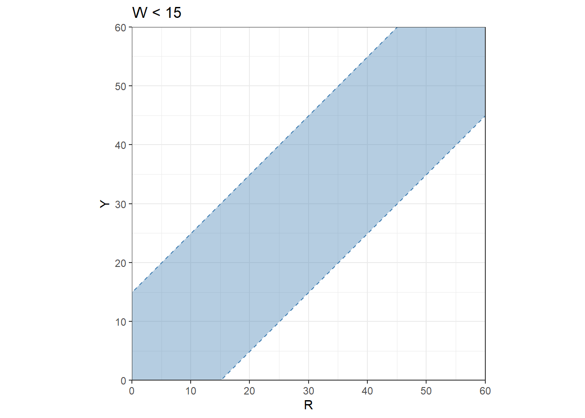
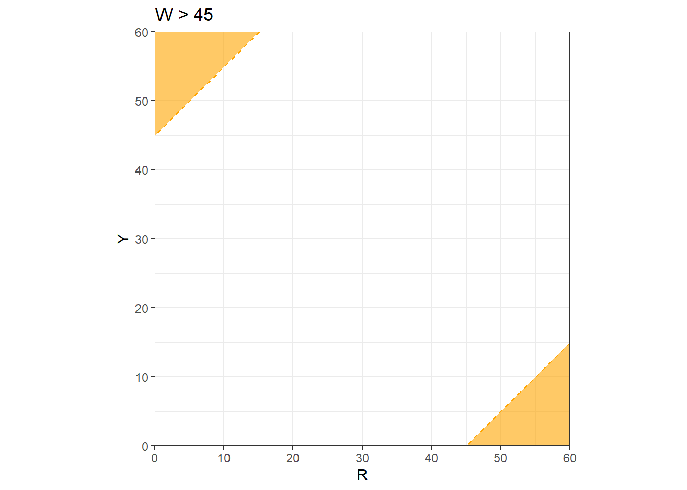
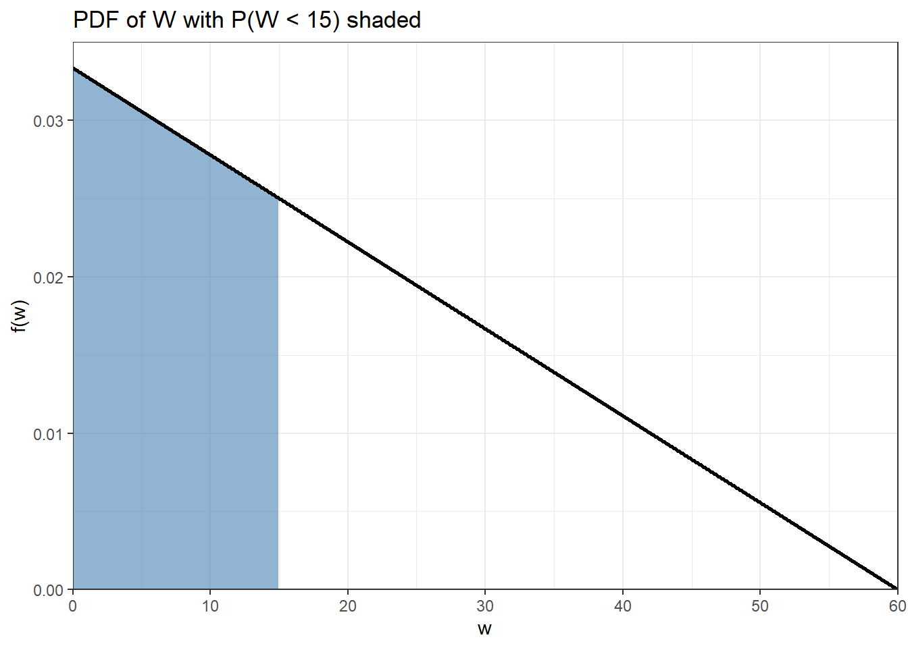
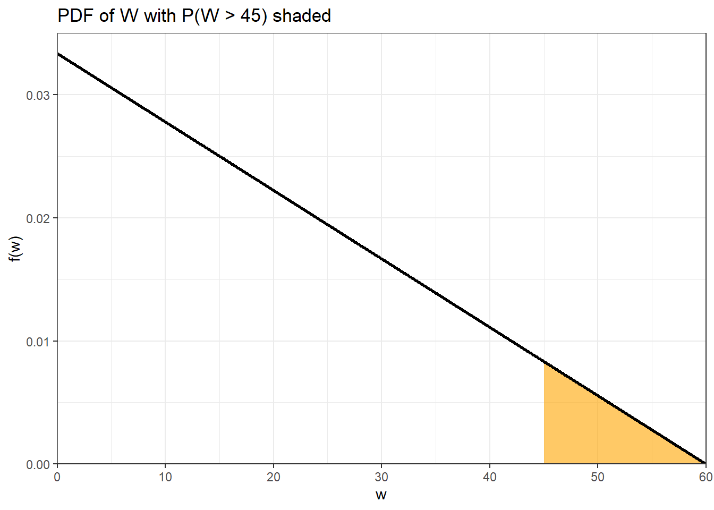
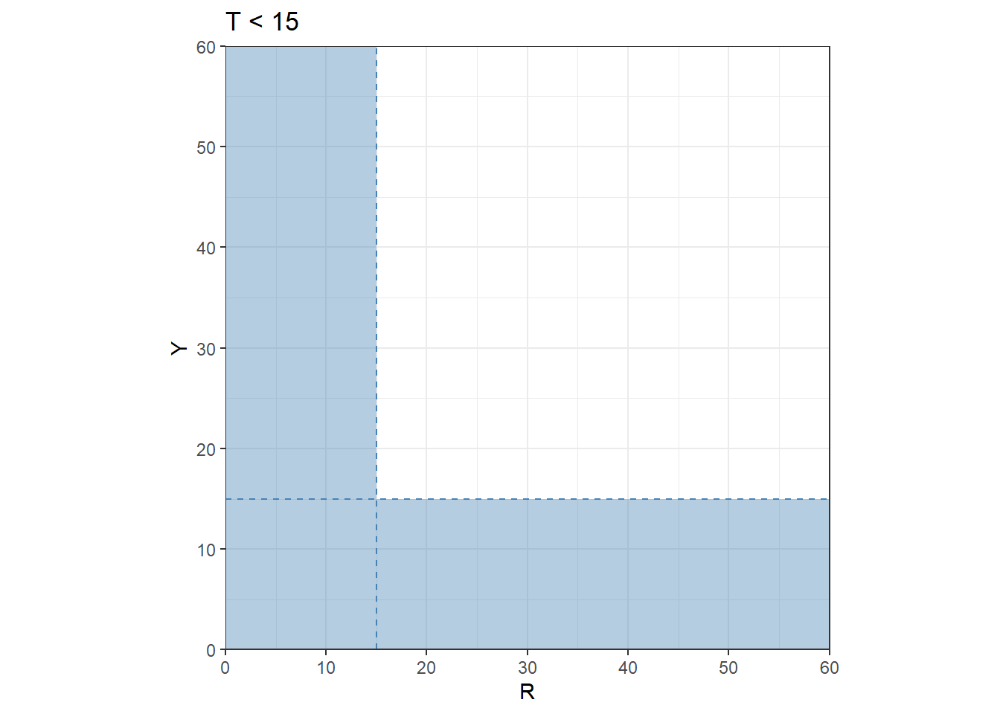
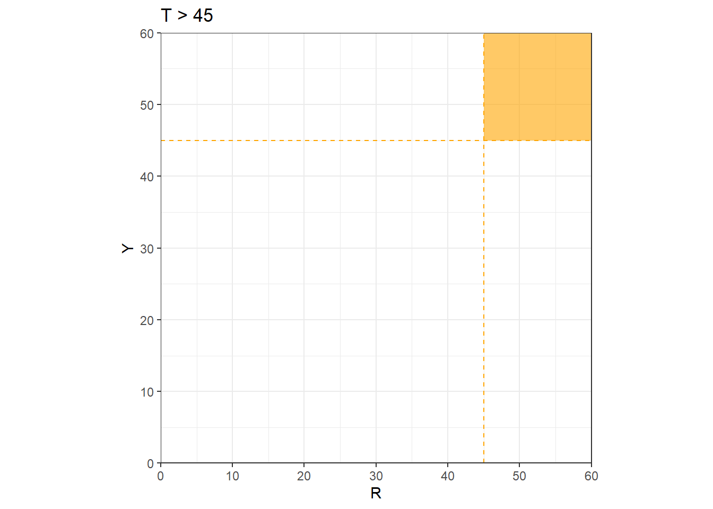

Xavier bets on red on each of 3 spins of a roulette wheel. After the third spin, Xavier leaves and Zander arrives and bets on black on the next two spins. Let \(X\) be the number of bets that Xavier wins and let \(Z\) be the number that Zander wins.
Identify the distribution of \(X\) and the distribution of \(Z\).
Are \(X\) and \(Z\) independent? Explain.
Compute and interpret \(\text{P}(X = 2, Z = 1)\).
What does \(X+Z\) represent in this context? Identify the distribution of \(X+Z\) without doing any calculations. Be sure to specify the values of any parameters. Explain your reasoning.
Compute \(\text{P}(X + Z = 3)\) without summing many terms.
Suppose instead that Yolanda bets on black on all 5 spins of the wheel. Does \(X + Y\) have a Binomial distribution? Answer yes or no and explain.
Suppose instead that Zander bet on the number 7 in his two bets. Does \(X + Z\) have a Binomial distribution in this case? Answer yes or no and explain.
Solution
\(X\) has a Binomial(3, 18/38) distribution and \(Z\) has a Binomial(2, 18/38) distribution.
Yes, \(X\) only depends on the first three spins, and \(Z\) only depends on the last two, and the spins are (physically) independent, so \(X\) and \(Z\) are independent.
Since \(X\) and \(X\) are independent \(\text{P}(X = 2, Z = 1) = \text{P}(X = 2)\text{P}(Z = 1)=\binom{3}{2}(18/38)^2(20/38)^2\binom{2}{1}(18/38)^1(20/38)^1=(0.354)(0.499)=0.177\). Over many sets of 5 spins, 2 of the first 3 spins land on red and 1 of the last 2 spins land on black in about 18% of sets.
\(X+Z\) is the total number of bets won by either of these players. The five spins satisfy the Binomial situation. Each trial results in either “win” or not. The probability of a win on any bet is 18/38; it doesn’t matter if they’re betting on black or red because each has the same probability of winning. The spins are independent. Between the two players there is a fixed number of 5 bets and we are counting the number of wins. So \(X+Z\) has a Binomial(5, 18/38) distribution.
\(\text{P}(X+Z = 3)=\binom{5}{3}(18/38)^3(20/38)^2 = 0.294\). Note that \(X=2, Z=1\) is only one way \(X+Z = 3\).
\(X + Y\) does not have a Binomial distribution, because the trials that determine \(X\) are not independent of those that determine \(Y\). The random variables \(X\) and \(Y\) are not independent.
\(X+Z\) would not have a Binomial distribution, because there is not the same probability of win (success) on all trials (18/38 for the first three but 1/38 for the last two).
Problem 2
Suppose the number of earthquakes per hour, for a certain range of magnitudes in a certain region, follows a Poisson distribution with parameter 0.7, independently from hour to hour.
Compute and interpret the probability that there is at least one earthquake of this size in the region in any given hour.
Compute and interpret the probability that there are exactly 3 earthquakes of this size in the region in any given hour.
Interpret the value 0.7 in context.
Construct a table, plot, and spinner corresponding to a Poisson(0.7) distribution.
Let \(X\) be the number of earthquakes in a 2 hour period. Identify by name the distribution of \(X\). Be sure to specify the values of any relevant parameters.
Compute and interpret \(\text{P}(X = 3)\).
Solution
Let \(X\) be the number of earthquakes in the region in a randomly selected hour. The pmf is
\(\text{P}(X\ge 1)=1-\text{P}(X=0) = 1 - e^{-0.7}\frac{0.7^0}{0!}=1-e^{-0.7}=1-0.497=0.503\). In about 50% of hour long intervals there is at least one quake.
\(\text{P}(X=3)= e^{-0.7}\frac{0.7^3}{3!}=0.028\). In about 3% of hour long intervals there are exactly 3 quakes.
Over many hour-long time intervals, there are 0.7 earthquakes per hour on average.
See below.
Let \(X\) be the number of earthquakes in a 2 hour period then \(X\) has a Poisson(1.4) distribution. (This is similar to the car accident problem.)
\(\text{P}(X = 3) = e^{-1.4}1.4^3/3! = 0.113\). Over many 2-hour periods, there are 3 earthquakes in about 11.3% of 2-hour periods.
plot(x, px, type ="h", xlab ="x", ylab ="p(x)", main ="Poisson(0.7) pmf")


Problem 3
Recall Example 2.6. Regina and Cady are meeting for lunch. Suppose they each arrive uniformly at random at a time between noon and 1:00, independently of each other. Record their arrival times as minutes after noon, so noon corresponds to 0 and 1:00 to 60. Recall the sample space from Example 2.2 and assume a uniform probability measure \(\text{P}\).
Let \(R\) be Regina’s arrival time and \(Y\) Cady’s. Then \(W = |R - Y|\) is the amount of time (minutes) the first person to arrive waits for the second person to arrive.
Compute and interpret \(\text{P}(W<15)\). (Hint: we computed this already in Example 2.6.)
Compute and interpret \(\text{P}(W>45)\). (Hint: use a method similar to the previous part.)
It can be shown that \(W\) has pdf \[
f_W(w) = (2/3600)(60-w), \qquad 0<w<60.
\]
Sketch a plot of the pdf. Describe roughly what this means in context.
Use the pdf to compute \(\text{P}(W<15)\). Set up an integral, but sketch a picture and use geometry to compute.
Use the pdf to compute \(\text{P}(W>45)\). Set up an integral, but sketch a picture and use geometry to compute.
Solution

Figure 1

Figure 2
See blue shaded region above and use geometry to compute the area of the blue shaded region (it’s easier to compute the area of the unshaded region first) divided by the total area of the square, which yields \(\text{P}(W < 15) = 0.4375\). If they meet like this over many days, on about 44% of days the first person will wait less than 15 minutes for the second person to arrive.
See orange shaded region above and use geometry to compute the area of the orange shaded region divided by the total area of the square, which yields \(\text{P}(W > 45) = 0.0625\). If they meet like this over many days, on about 6% of days the first person will wait more than 45 minutes for the second person to arrive.
See plot below. The density is highest at \(w=0\) and decreases linearly to 0 at \(w=60\). Waiting time is most likely to be close to 0 minutes, and likelihood of waiting close to \(w\) minutes decreases as \(w\) increases.
Integrate the pdf over \((0, 15)\); see the shaded blue area below. This gives an area of a trapezoid; the complementary unshaded area is a triangle with a base of (60 - 15), a height of \(f(15) = (2/3600)(60-15)\), so the probability we want is \(\text{P}(W<15) = 1-(1/2)(60-15)(2/3600)(60-15) = 1-(45/60)^2 = 0.4375\). As an integral \[
\text{P}(W < 15) = \int_0^{15} (2/3600)(60-w)dw = 0.4375
\]
Integrate the pdf over \((45, 60)\); see the shaded orange area below. This gives an area of a triangle with a base of (60 - 45), a height of \(f(45) = (2/3600)(60-45)\), so the probability we want is \(\text{P}(T<45) = (1/2)(60-45)(2/3600)(60-45) = (15/60)^2 = 0.0625\). As an integral \[
\text{P}(W < 45) = \int_{45}^{60} (2/3600)(60-w)dw = 0.0625
\]

Figure 3

Figure 4
Problem 4
Continuing with the setup of Problem 3. Consider \(T = \min(R, Y)\) is the time (minutes after noon) at which the first person arrives.
Is \(T\) the same random variable as \(W\) from Problem 3? Explain.
Compute and interpret \(\text{P}(T<15)\). (Hint: we computed something similar in Example 2.6.)
Compute and interpret \(\text{P}(T>45)\). (Hint: use a method similar to the previous part.)
It can be shown that \(T\) has pdf \[
f_T(t) = (2/3600)(60-t), \qquad 0<t<60.
\]
Does \(T\) have the same distribution as \(W\) from Problem 3? Explain what this means.
Solution

Figure 5

Figure 6
No. \(T\) and \(W\) are different random variables. They are measuring different things. For example, if Regina arrives at time 10 and Cady arrives and time 42, then the first arrival time \(T\) is 10 and the waiting time \(W\) is 32.
See blue shaded region above and use geometry to compute the area of the blue shaded region (it’s easier to compute the area of the unshaded region first) divided by the total area of the square, which yields \(\text{P}(T < 15) = 0.4375\). If they meet like this over many days, on about 44% of days the first person will arrive at most 15 minutes after noon.
See orange shaded region above and use geometry to compute the area of the orange shaded region divided by the total area of the square, which yields \(\text{P}(T > 45) = 0.0625\). If they meet like this over many days, on about 6% of days the first person will arrive more than 45 minutes after noon.
Yes, \(T\) and \(W\) have the same distribution; they have the same pattern of variability over many days. Over many reps, 43.75% of reps have \(W<15\) and 43.75% of reps have \(T<15\) (though they’re not the same reps). And so on. You could use the same spinner to simulates values of \(W\) as you could \(T\).